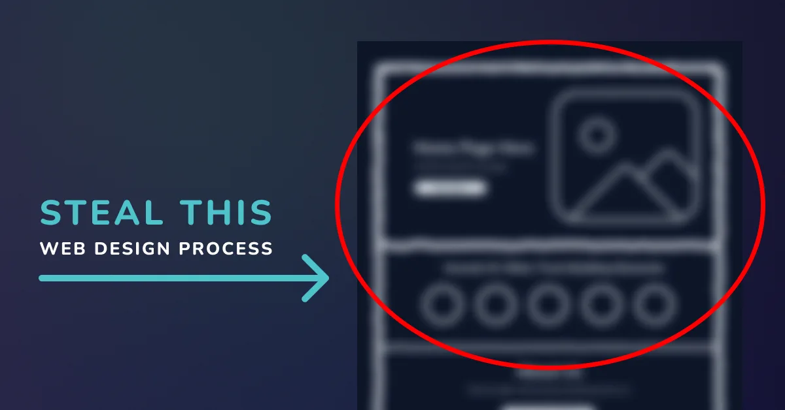

Design
Steal This Web Design Process!

After more than 10 years in design and building strategic WordPress websites for service-based businesses, I’ve learned something important:
A beautiful website that lacks clarity will not convert.
A strategic website that lacks personality will not connect.
The magic happens when both work together.
Here’s exactly how I approach every website project.

Start With People and Copy
Step 1: Choose the Audience First
Before design. Before colors. Before images.
We start with people.
Ask yourself:
- Who is this for?
- What stage are they at?
- What problem are they trying to solve?
- What tone will make them feel understood?
Design is not about what you like. It’s about what makes your audience feel confident enough to take the next step.
If we don’t know who we’re speaking to, everything else becomes guesswork.
Audience clarity drives messaging, structure, visual tone, and conversion strategy. When the audience is clear, decisions become simple.

Step 2: Write the Copy Before You Design
This is where most people get it backwards. They start with colors, or layout, or inspiration screenshots.
But clarity comes first.
Every page must answer five things:
- What is this page about?
- Who does it help?
- What does it help them with?
- What result do they get?
- What are the next steps?
If the copy isn’t clear, the design will feel off. No amount of styling can fix confusing messaging.
Clarity first. Styling second.

Structure the Page for Search
Step 3: One Page = One Topic (SEO Foundation)
This is the structure-for-Google part.
Every page has one job: one main topic, one focus keyword, one clear intent. No mixing services. No vague headlines.
Your H1 must include the focus keyword. For example:
Instead of “Transforming Outdoor Spaces” — write “Residential Rubber Surfacing in Fort Myers.”
Specific beats clever.
When each page focuses on a single topic, Google understands it, visitors understand it, and your authority increases. Simple structure wins.

Step 4: Structure the Page with Headings
Headings create your layout automatically.
- H1 = What this page is about
- H2s = The main sections that explain it
Each H2 becomes a section on the page. This creates logical flow, easy scanning, SEO alignment, and a natural wireframe. Your layout has direction before you ever design a single section.
Step 5: Layout your copy
Now we organize. Not design — organize.
Stack your sections vertically:
- Hero (H1 + short supporting text + CTA)
- Trust
- Services or explanation
- Proof
- Clear call to action
If something feels messy at this stage, it’s almost always a copy issue. Fix the messaging before adjusting the layout. Structure removes overwhelm.

Design the Look and Feel
Step 6: Decide the Vibe (Look & Feel)
Now we move into visual language. Based on your audience, ask: is the vibe calm, corporate, playful, bold, luxurious, or grounded?
The vibe guides typography, color palette, image style, and icon style. Design decisions must match the emotional tone your audience expects. If you’re serving executives, the vibe is different than if you’re serving new moms or creatives.
The visual system should reinforce the message, not compete with it.

Step 7: Choose Typography
Typography is structure, not decoration. Keep it simple: one headline font, one body font.
For the main headline, choose something with personality — a little more expressive. This is where the vibe shows up. But your body copy should stay simple.
Larger fonts are easier to read, which gives you more flexibility to use a slightly expressive typeface for big headlines. Body text is smaller, so readability matters more than style. Your body font should be clean, easy on the eyes, and highly legible at smaller sizes.
Make sure your typography has strong contrast, supports clear hierarchy, and feels consistent across the page. When hierarchy is strong, users don’t feel lost — they feel guided.

Step 8: Build Color Rhythm
Color should create flow, not chaos. Avoid pure white and pure black — they can feel harsh.
Instead, use very subtle background colors (almost white), alternating section tones to divide content, and darker background sections for emphasis. Each section should feel visually separated.
Typography must always have enough contrast to read easily. If people can’t comfortably read your content, they won’t stay.

Step 9: Add Images and Icons for Skimmability
Images and icons are not filler. They should support the message, clarify ideas, break up heavy text, and improve scanning.
Your website is not a novel. People skim before they commit. Visual elements reinforce understanding and reduce cognitive load.
Final Check
Before launch, I ask:
- Can I understand what this page is about in 5 seconds?
- Is there only one main topic?
- Is the next step obvious?
- Is it readable?
- Does the design match the audience?
If the answer is yes, it works.
Final Thoughts
This process balances human psychology, clear communication, SEO structure, and intentional design. It removes overwhelm, removes guesswork, and removes trendy-but-confusing layouts.
It builds websites that build trust, rank strategically, guide users naturally, and convert with clarity.
Design for humans.
Structure for Google.
Build with purpose.
You got this. And if you don’t, I’m only a contact form away 😉
Work with us
Want this process applied to your website?
This post walks through how we design sites: audience first, copy first, then structure and visuals.
If you want help with custom website design that is clear to people and structured for search, contact Leanne Digital.
Frequently Asked Questions
Should I design my website before writing the copy?
No. Copy first. If the page cannot explain who it is for, what it offers, and what to do next, no layout will fix that.
Why should each page cover only one topic?
One page, one topic helps visitors understand the offer and helps search engines rank the page for a clear intent. Mixing services on one page usually makes both the message and the SEO weaker.
Do I need a complicated font pairing?
No. One headline font with personality and one simple body font is enough. Hierarchy and readability matter more than collecting typefaces.
When should I worry about colours and images?
After the audience, copy, and page structure are clear. Visuals should support the message, not replace it.
Can Leanne Digital use this process on an existing site?
Yes. We use the same sequence for new builds and redesigns: audience, copy, structure, then design and development.